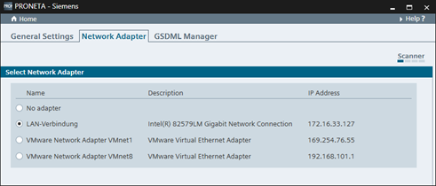

In the “Settings” window, there are three different tabs available:
These modes are used to adjust the operational details of PRONETA Basic.
Here you can change the network adapter used for PRONETA.

A list of Ethernet adapters found on your PC is displayed, chose the appropriate adapter from here.
If no adapter is selected, only offline functionality with PRONETA Basic is available (Offline Mode and the Comparison Mode when comparing two offline topologies).